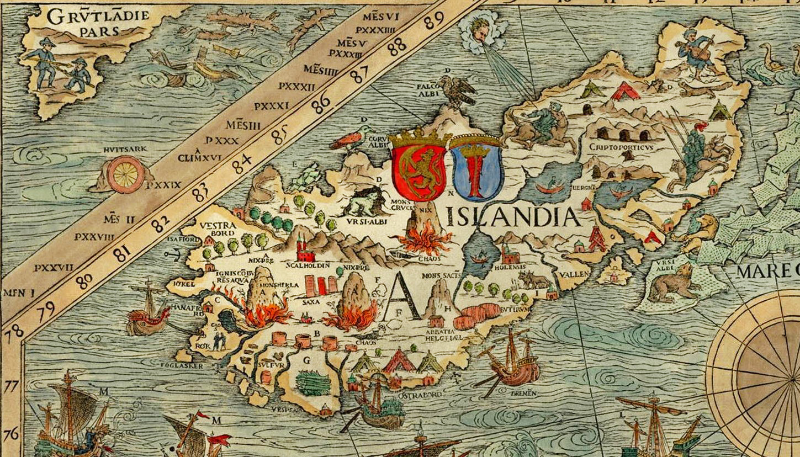

The recorded history of Iceland began with the settlement by Viking explorers and their slaves from the east, particularly Norway and the British Isles, in the late 9th century, since Iceland was uninhabited long after the rest of western Europe was settled. Recorded settlement has conventionally been dated back to 874 AD, although archaeological evidence indicates Gaelic monks had settled Iceland previously. The land was settled quickly, mainly by Norwegians who may have been fleeing conflict or seeking new land to farm. By 930, the chieftains had established a form of governance (Althing), making it one of the world's oldest parliaments. Also towards the end of the tenth century Christianity came to Iceland due to the influence of the Norwegian king, Olaf Tryggvason. During this time Iceland remained independent, a period known as the Old Commonwealth and Icelandic historians.
History
According to the Iceland remained part of Denmark, but in keeping with the rise of nationalism around Europe in the nineteenth century an independence movement emerged. The Althing, which had been suspended in 1799, was restored in 1844, and Iceland gained sovereignty after World War I, on 1 December 1918. However Iceland shared the Danish Monarchy until World War II. Although Iceland was neutral, the allies occupied it without resistance because of its strategic situation.
Iceland on the Carta Marina by Olaus Magnus
Since Denmark was under Nazi occupation, Iceland declared itself a republic, and the Republic of Iceland was founded on 17 June 1944 as a fully independent nation. Following the Second World War Iceland was a founding member of the United Nations and grew rapidly, largely due to fishing, although this was marred by conflicts with other nations (Cod Wars)..
Cuisine
Following rapid financial growth, the economy collapsed in 2008. Today Iceland still struggles with the aftermath of the financial crisis. Iceland has adopted currency barriers that are almost unique in the history of modern Europe. Now tourism accounts for the second largest source of revenue. Iceland continues to remain outside the European Union.
Because of its remoteness, Iceland has been spared the ravages of European wars, but has been affected by other external events, such as the Black Death and the Protestant Reformation imposed by Denmark. Iceland's history has also been marked by a number of natural disasters.
 A typical Porramatur assortment
A typical Porramatur assortmentPolitics
The first permanent settler in Iceland is usually considered to have been a Norwegian chieftain named Ingólfr Arnarson and his wife Hallveig. According to Landnáma, he threw two carved pillars overboard as he neared land, vowing to settle wherever they landed. He then sailed along the coast until the pillars were found in the southwestern peninsula, now known as Reykjanesskagi. There he settled with his family around 874, in a place he named Reykjavík (Cove of Smoke) due to the geothermal steam rising from the earth.
Municipalities of Iceland

During the 11th and 12th centuries, the centralization of power had worn down the institutions of the Commonwealth, as the former, notable independence of local farmers and chieftains gave way to the growing power of a handful of families and their leaders. The period from around 1200 to 1262 is generally known as Age of the Sturlungs. This refers to Sturla and his sons, Sighvatur, and Snorri, who were one of two main clans fighting for power over Iceland, causing havoc in a land inhabited almost entirely by farmers who could ill-afford to travel far from their farms, across the island to fight for their leaders.